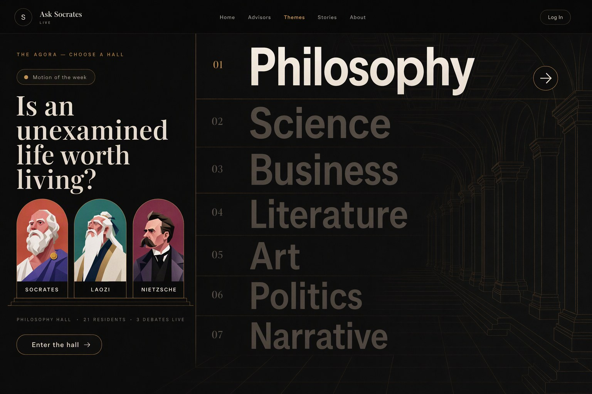
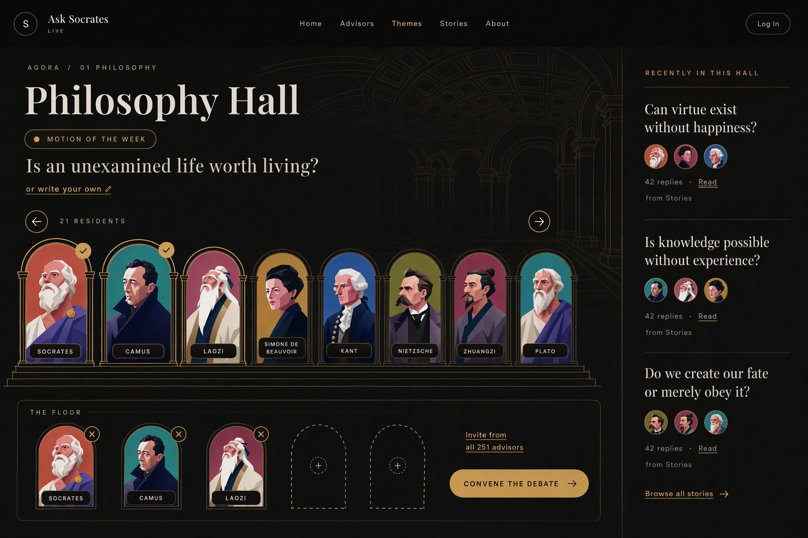
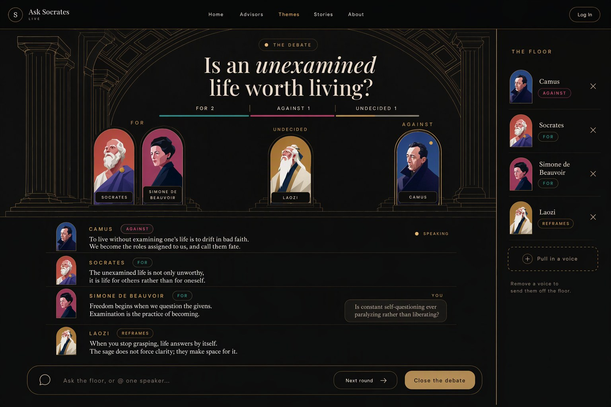
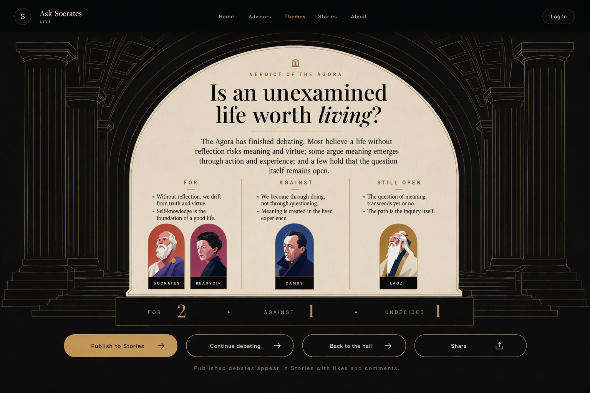

主题页 · The Agora 交互流程
① 主题首页 → ② 辩论厅选人 → ③ 辩论现场 → ④ 结论 → 发布到用户故事
① 主题首页
右侧超大分类词，悬停左侧显示本周辩题与常驻名人，点「进入辩论厅」。

② 辩论厅 · 选谁上场
柱廊里点选名人落到下方讲台（5 个座位），可从全部 251 人里邀请，点「召开辩论」。

③ 辩论现场
名人按立场站左右（支持/反对/未表态），每轮后换位；可 @ 单人提问、踢人拉人。

④ 结论
石碑式总结，三栏观点，可发布到 Stories 被点赞评论。
